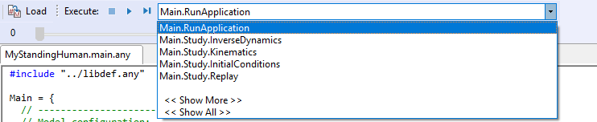

Lesson 2: Controlling the Posture¶
The Standing Model has been set up to have its posture defined by the specification of anatomical angles in the joints. These specifications have been collected in one of the model files, Mannequin.any. Scroll down your model file until you come to the point where the Mannequin.any file is included. Here is a step by step description:
Mannequin file structure¶
...
// Using your own Mannequin.any file in the Model folder of your model
#path BM_MANNEQUIN_FILE "Model\Mannequin.any"
...
This line means that your model will use this Mannequin.any file which is located in the Model folder of your model folder.
If you double-click the above line in the editor window after loading your model, the mannequin file opens up in a new tab. Then you see the following structure. (In the interest of legibility we have removed many of the lines):
AnyFolder Mannequin = {
AnyFolder Posture = {
AnyFolder Right = {
};
AnyFolder Left = {
};
};
AnyFolder PostureVel= {
AnyFolder Right = {
};
AnyFolder Left = {
};
};
AnyFolder Load = {
AnyFolder Right = {
};
AnyFolder Left = {
};
}; // Loads
};
This file is typical for the AnyScript language in the sense that it is organized in so-called folders, which is a hierarchy formed by the braces. Each pair of braces delimits an independent part of the model with its variables and other definitions and can be seen in the model tree as a folder.
Everything in this file is contained in the Mannequin folder. It contains specifications of joint angles, movements, and externally applied loads on the body (optional). Each of these specifications is again subdivided into parts for the right and left-hand sides of the body respectively. The first folder, Posture, contains joint angle specifications. You can set any of the joint angles to a reasonable value (in degrees), and when you reload the model, it will change its posture accordingly. Please make sure that the values are as follows:
...
AnyFolder Right = {
//Arm
AnyVar SternoClavicularProtraction=-23; //This value is not used for initial position
AnyVar SternoClavicularElevation=11.5; //This value is not used for initial position
AnyVar SternoClavicularAxialRotation=-20; //This value is not used for initial position
AnyVar GlenohumeralFlexion =-0;
AnyVar GlenohumeralAbduction = 10;
AnyVar GlenohumeralExternalRotation = 0;
AnyVar ElbowFlexion = 0.01;
AnyVar ElbowPronation = -20.0;
AnyVar WristFlexion =0;
AnyVar WristAbduction =0;
//Leg
AnyVar HipFlexion = 0.0;
AnyVar HipAbduction = 5.0;
AnyVar HipExternalRotation = 0.0;
AnyVar KneeFlexion = 0.0;
AnyVar AnklePlantarFlexion =0.0;
AnyVar SubTalarEversion =0.0;
...
When these parameters are set for the right-hand side, the left-hand side automatically follows along and creates a symmetric posture. This happens because each of the corresponding settings in the Left folder just refers to the settings in the right folder. The ability to do this is an important part of the AnyScript language: Anywhere a number is expected, you can write a reference to a variable instead, or even a mathematical expression, if necessary.
If at any time you want a non-symmetric posture, simply replace some of the variable references in the Left folder by numbers of your choice.
Further down in the Mannequin.any file you will find the folder PostureVel. This is organized exactly like Posture, but the numbers you specify here are joint angular velocities in degrees per second. For now, please leave all the values in this folder as zero.
Now it is time to perform an analysis.
Running an analysis¶
On the left-hand side of the screen, you find a tall, narrow window with tabs on its left edge. Please select the Operations tab and find the following:

What you see are different operations, i.e. analysis types, the system can perform on the model. Select the “RunApplication” and click the “Run” button on the toolbar (image below):

You will see the model move slightly into position and you are finally awarded the following message:
1.0) Inverse dynamic analysis…
1.10) …Inverse dynamic analysis completed
You have just completed your first analysis of an AnyBody model. In the next lesson, we shall briefly examine the results and also see what happens if we change the posture: Lesson 3: Reviewing analysis results.